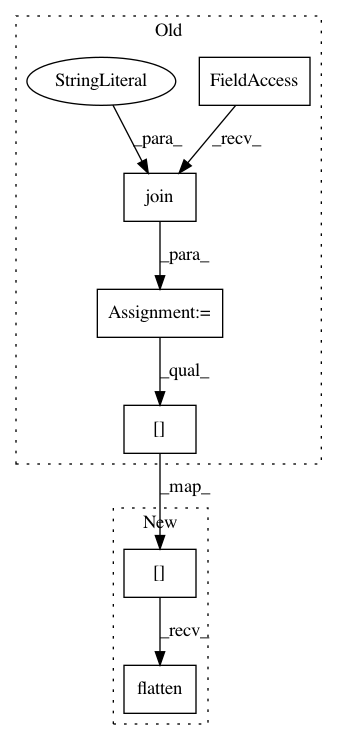

042392f84f37ec92f97d6b73af2e5957c6d6863e,solutionbox/code_free_ml/test_mltoolbox/test_analyze_data.py,TestGraphBuilding,test_make_transform_graph_numerics,#TestGraphBuilding#,458
Before Change
"num2": {"transform": "scale", "value": 10},
"num3": {"transform": "scale"}})
model_path = os.path.join(output_folder, "transform_fn")
self.assertTrue(os.path.isfile(os.path.join(model_path, "saved_model.pb")))
results = self._run_graph(model_path, {"num1": [5, 10, 15],
"num2": [-1, 1, 0.5],
"num3": [10, 5, 7]})
for result, expected_result in zip(results["num1"].tolist(), [5, 10, 15]):
self.assertAlmostEqual(result, expected_result)
for result, expected_result in zip(results["num2"].tolist(),
[-10, 10, 5]):
self.assertAlmostEqual(result, expected_result)
After Change
[5, 10, 15]):
self.assertAlmostEqual(result, expected_result)
for result, expected_result in zip(results["num2"].flatten().tolist(),
[-10, 10, 5]):
self.assertAlmostEqual(result, expected_result)
In pattern: SUPERPATTERN
Frequency: 3
Non-data size: 6
Instances
Project Name: googledatalab/pydatalab
Commit Name: 042392f84f37ec92f97d6b73af2e5957c6d6863e
Time: 2017-05-23
Author: brandondutra@google.com
File Name: solutionbox/code_free_ml/test_mltoolbox/test_analyze_data.py
Class Name: TestGraphBuilding
Method Name: test_make_transform_graph_numerics
Project Name: googledatalab/pydatalab
Commit Name: 042392f84f37ec92f97d6b73af2e5957c6d6863e
Time: 2017-05-23
Author: brandondutra@google.com
File Name: solutionbox/code_free_ml/test_mltoolbox/test_analyze_data.py
Class Name: TestGraphBuilding
Method Name: test_make_transform_graph_category
Project Name: googledatalab/pydatalab
Commit Name: 042392f84f37ec92f97d6b73af2e5957c6d6863e
Time: 2017-05-23
Author: brandondutra@google.com
File Name: solutionbox/code_free_ml/test_mltoolbox/test_analyze_data.py
Class Name: TestGraphBuilding
Method Name: test_make_transform_graph_numerics_gcs